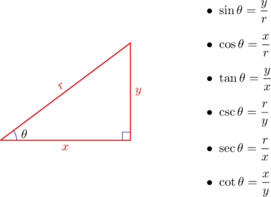
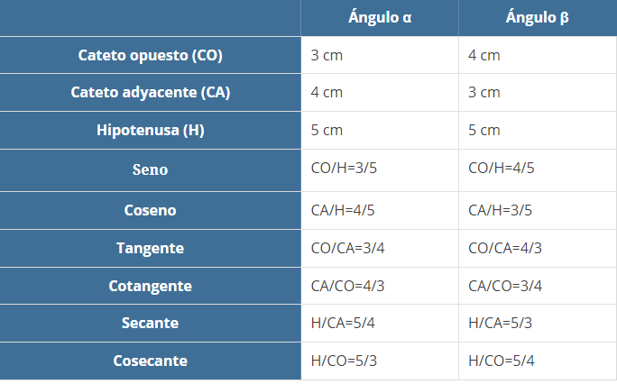

Funciones trigonométricas


Las funciones trigonométricas se pueden definir como el cociente entre dos lados
de un triángulo rectángulo, asociado a sus ángulos. Los ángulos en las funciones
trigonométricas se expresan como radianes. Los radianes son otra manera de
medir la apertura de un ángulo, así como lo son los grados, que están en función
del radio de una circunferencia.Son las funciones cuyo argumento, o variable
independiente, es un ángulo. Estas usualmente incluyen términos que describen
la medición de ángulos y triángulos, tal como:
- Seno
- Coseno
- Tangente
- Secante
- Cosecante
- Cotangente
Funciones trigonométricas en el triángulo rectángulo

Un triángulo rectángulo es un polígono de tres lados, con un ángulo recto
(igual a 90º). Los lados que delimitan el ángulo recto se llaman catetos,
y el lado opuesto de mayor longitud es la hipotenusa.
Las funciones o razones trigonométricas son las relaciones entre los catetos
y la hipotenusa en un triángulo rectángulo con respecto a uno de los ángulos
agudos. Tenemos entonces que para cualquier ángulo agudo del triángulo rectángulo:
- El seno del ángulo (se abrevia sen) es la razón o la división de la longitud del cateto opuesto (CO) entre la longitud de la hipotenusa (H);
- El coseno del ángulo (se abrevia cos) es la razón entre la longitud del cateto adyacente (CA) entre la longitud de la hipotenusa (H),
- La tangente del ángulo (se abrevia tan) es la razón entre la longitud del CO entre el CA, esto es igual a la división del seno entre el coseno,
- La cotangente del ángulo (se abrevia cot) es la razón entre el CA y el CO,
- La secante del ángulo (se abrevia sec) es la razón entre la hipotenusa y el CA, y
- La cosecante del ángulo (se abrevia csc) es la razón entre la hipotenusa y el CO.
Medición de angulos
Seno
Coseno
Tangente
Cotangente

Secante
Cosecante
Ejemplo
Dado un triángulo rectángulo cuyos catetos miden 3 y 4 cm y la hipotenusa
mide 5 cm, las funciones trigonométricas de cada ángulo agudo serán:
